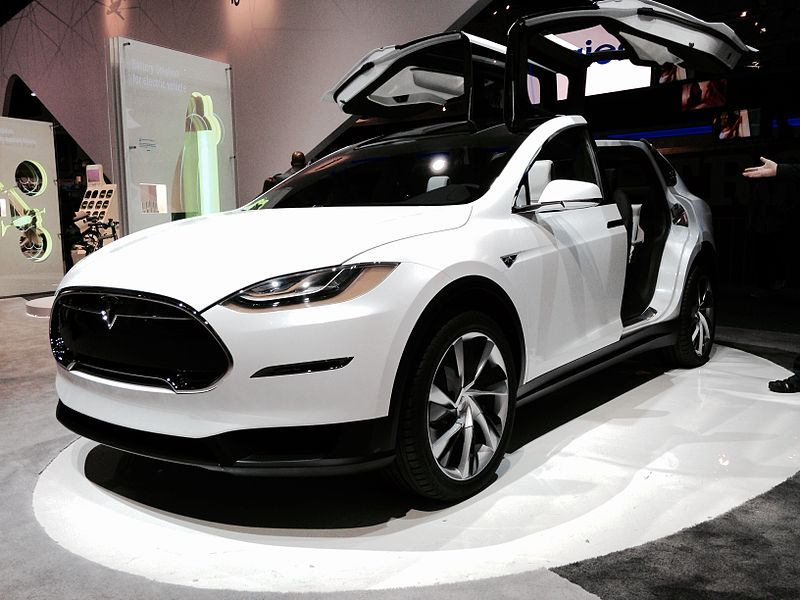
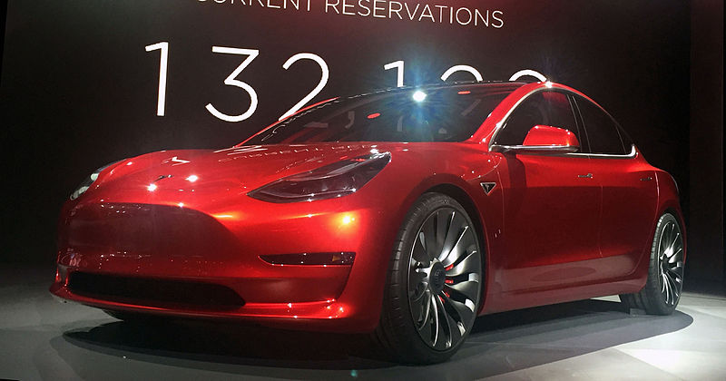

Tesla model S
 Концепт автомобиля был представлен 26 марта 2009 года в городке Хоторн, Калифорния. Пятидверный хетчбэк разрабатывается под прежним условным обозначением «Whitestar» фирменным филиалом в Детройте. После окончания проектно-конструкторских работ фабрика должна производить в Калифорнии первоначально 10 000, позже — 25 000 автомобилей модели.
Концепт автомобиля был представлен 26 марта 2009 года в городке Хоторн, Калифорния. Пятидверный хетчбэк разрабатывается под прежним условным обозначением «Whitestar» фирменным филиалом в Детройте. После окончания проектно-конструкторских работ фабрика должна производить в Калифорнии первоначально 10 000, позже — 25 000 автомобилей модели.
Tesla Model X
9 февраля 2012 года компания представила прототип новой модели — кроссовер под названием Tesla Model X. Тогда же Илон Маск заявил, что производство модели планируется начать в 2013 году[19]. Изначально планировалось, что в конце 2014 года будут поставлены небольшие партии, а полноценный выпуск модели начнётся в 2015 году[20]. Однако, в феврале 2014 года было заявлено, что начало поставок ожидается только во втором квартале 2015 года[21]. В ноябре начало поставок было вновь перенесено, на этот раз на третий квартал 2015 года[22].
Tesla Model 3
Model 3 изначально носила названия Model E и «BlueStar», текущее название было анонсировано 15 июля 2014 года[24]. Ожидалось, что модель будет представлена в марте 2016 года[25].
Мартин Эбергартд сообщил 30 июля 2007 года, что транспортное средство будет в продаже к 2012 году. Предусмотренная цена модели в США была объявлена в пределах 30 000 долларов[источник не указан 37 дней].
Модель была представлена публике 1 апреля 2016 г. За первую неделю машину зарезервировали 325 тысяч человек, внеся депозит в одну тысячу долларов. По словам Маска, такой значительный объём заказов приведёт к корректировке производственных планов компании.